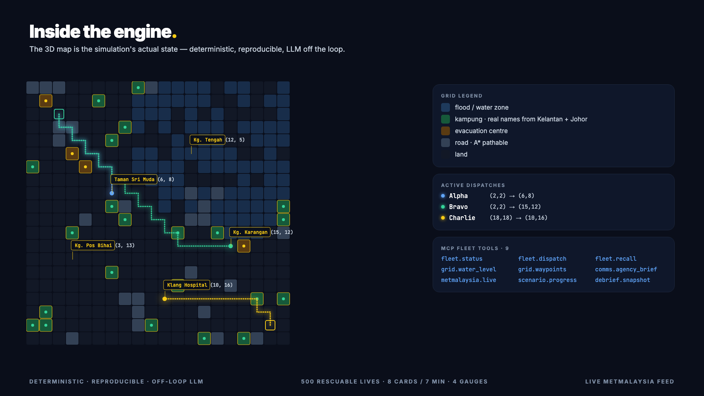

Arus — Banjir Drill
A deterministic flood-coordination simulator with Google ADK agents, MCP fleet discovery, Gemini narration at the boundaries, and a live MetMalaysia feed — served from Google Cloud Run.
1 · Overview
Arus is a citizen-facing Malaysian flood coordination drill. The player acts as Datuk Nadia, NADMA's liaison officer, during the 2021 Klang Valley floods. Eight incoming calls arrive over seven minutes; four gauges — lives saved, assets spent, inter-agency trust, time remaining — respond to every choice.
Three modes share the same simulation core:
PLAY
Human dispatcher. 8 cards / 7 min. Manual drone dispatch on the 3D tactical map.
COACH
2-stage Google ADK agent. Assessor queries 9 MCP tools; Recommender suggests + places a ghost drone. Stream of thought visible.
WATCH AI
5-stage autonomous ADK pipeline: Assess → Strategise → Dispatch → Analyse → Brief. Hands-free.
The core simulation engine (backend/game/engine.py) is deterministic and off-loop — no LLM is called inside the tick loop. Gemini 2.5 Pro is invoked only at two boundaries: the opening narrator briefing (backend/services/narrator.py) and the end-of-session debrief commentary.
2 · Architecture — one engine, three lenses

Request flow — PLAY mode
React UI ─────► POST /api/game/start (creates session, fetches intro via Gemini)
◄───── session_id, scenario, intro.{en,bm}, live_warnings[]
React UI ─────► GET /api/game/state (polled every ~3s)
◄───── gauges, current_card, status
React UI ─────► POST /api/game/choose {card_id, option_id}
◄───── deltas, flavor.{en,bm}, assigned_drone, degraded
... (repeat for 8 cards)
React UI ─────► GET /api/game/debrief
◄───── grade, real_event, commentary, extension_links
Request flow — WATCH AI (AUTO)
Client starts session with mode=AUTO. FastAPI boots a SequentialAgent pipeline: Assess → reads fleet state via MCP tools Strategise → ranks options with bilingual rationale Dispatch → calls fleet.dispatch via MCP Analyse → reads resulting deltas via fleet.status Brief → writes BM + EN agency_brief.md WebSocket pushes a 5-stage progress bar in real time.
3 · Engine internals

GridWorld
20×20 typed-cell grid (backend/core/grid_world.py). Each cell carries terrain, water level, residents count, evac capacity. Ticks advance deterministically at 1 Hz.
Locality
backend/core/locality.py maps grid cells to real kampung names (Kelantan + Johor). Card coordinates in cards.yaml reference these indices.
Pathfinding
A* over road cells in backend/core/pathplanner.py. Drones dispatched via fleet.dispatch compute a real path and animate over ticks.
Scoring
backend/game/score.py applies option deltas to four gauges with clamping. degraded=true flips when assets or trust fall below thresholds.
MetMalaysia feed
backend/services/met_feed.py pulls api.data.gov.my/weather/warning at session start. Warnings are shown on the HUD and tighten card cadence in severe-warning conditions.
Real stats
backend/game/real_stats.json holds the 2021 Shah Alam ground-truth (40k displaced, 54 dead, 16h wait, 1.5k claimants). Used for the side-by-side debrief.
4 · API reference
Base URL: https://arus-1030181742799.asia-southeast1.run.app
| Method | Path | Purpose |
|---|---|---|
GET | /api/game/scenarios | List available scenarios |
POST | /api/game/start | Create session · returns intro + warnings |
GET | /api/game/state | Current gauges + pending card |
POST | /api/game/choose | Resolve a card {card_id, option_id} |
GET | /api/game/debrief | Final grade + commentary + extension links |
GET | /api/live/warnings | Proxied MetMalaysia feed |
POST | /api/vision/analyse | Gemini Vision bonus · describes an uploaded flood image |
WS | /ws/game | State push + AUTO 5-stage progress |
Example — complete round in curl
# 1. Start session curl -s -X POST https://arus-1030181742799.asia-southeast1.run.app/api/game/start \ -H 'Content-Type: application/json' \ -d '{"scenario_id":"shah_alam_hard","locale":"en"}' # 2. Wait 3s, fetch first card curl -s https://arus-1030181742799.asia-southeast1.run.app/api/game/state # 3. Pick first option on the current card curl -s -X POST https://arus-1030181742799.asia-southeast1.run.app/api/game/choose \ -H 'Content-Type: application/json' \ -d '{"card_id":"c01_sri_muda","option_id":"send_bomba_now"}' # 4. Repeat for the other 7 cards # 5. Fetch debrief with real-event comparison curl -s https://arus-1030181742799.asia-southeast1.run.app/api/game/debrief
Response shape — /choose
{
"status": "ok",
"data": {
"ok": true,
"card_id": "c01_sri_muda",
"option_id": "send_bomba_now",
"deltas": { "saved": 6, "assets": -22, "trust": 8 },
"gauges": { "saved": 10, "assets": 78.0, "trust": 100, "time_remaining": 414.2 },
"assigned_drone": "Alpha",
"agency": "BOMBA",
"degraded": false,
"flavor": {
"en": "Swift-water team mobilising. Sri Muda takes first priority.",
"bm": "Pasukan penyelamat mara dengan bot penyelamat. Sri Muda mendapat keutamaan pertama."
}
}
}
5 · MCP fleet tools
Nine tools exposed on a fastmcp server at port 8001. Both agent modes discover tools at runtime via tools/list_changed — no hard-coded drone IDs or fleet constants in agent code.
| Tool | Signature | Used by |
|---|---|---|
fleet.status | → {drones, assets, trust} | Assess stage, COACH Assessor |
fleet.dispatch | (drone_id, target_xy) → path | Dispatch stage, PLAY manual |
fleet.recall | (drone_id) → ok | emergency override |
grid.water_level | (xy) → 0..1 | Strategise ranking |
grid.waypoints | (type) → xy[] | Assess, Dispatch |
comms.agency_brief | (text) → ok | Brief stage |
metmalaysia.live | → warnings[] | Assess (scheduling pressure) |
scenario.progress | → {cards_left, seconds_left} | all agents |
debrief.snapshot | → {saved, grade} | Brief stage |
6 · Scenario format
Scenarios live in backend/game/cards.yaml. One scenario = metadata block + 8 card definitions. Each card has a coordinate on the grid, bilingual body, and 2-3 options with deterministic deltas.
shah_alam_hard: name_en: "Klang Valley Floods 2021 — Hard Mode" name_bm: "Banjir Lembah Klang 2021 — Mod Sukar" target_saved: 22 duration_seconds: 420 cards: - id: c01_sri_muda tick: 5 title_en: "Incoming: Taman Sri Muda" body_en: "Water at chest level. 60+ residents on rooftops. 3 elderly cannot climb up." coord: [6, 8] options: - id: send_bomba_now label_en: "Deploy BOMBA immediately (ETA 25 min)" agency: BOMBA deltas: { saved: 6, assets: -22, trust: 8 } - id: ask_mmea_boats label_en: "Request MMEA boats (ETA 15 min, off their remit)" agency: MMEA deltas: { saved: 6, assets: -15, trust: -12 } - id: log_only label_en: "Log only — no asset available" deltas: { saved: 0, assets: 0, trust: -8 }
7 · ADK agents
COACH — 2-stage LlmAgent
Both stages use Gemini 2.5 Pro with structured output schemas. The Recommender's output shape dictates the ghost-drone coordinate overlaid on the 3D map.
from google.adk.agents import SequentialAgent, LlmAgent from .prompts import ASSESSOR_PROMPT, RECOMMENDER_PROMPT from .schemas import AssessorOutput, RecommenderOutput coach_assessor = LlmAgent( model="gemini-2.5-pro", instruction=ASSESSOR_PROMPT, output_schema=AssessorOutput, tools=mcp_tools, # 9 fleet tools auto-discovered ) coach_recommender = LlmAgent( model="gemini-2.5-pro", instruction=RECOMMENDER_PROMPT, output_schema=RecommenderOutput, ) coach = SequentialAgent(sub_agents=[coach_assessor, coach_recommender])
WATCH AI — 5-stage SequentialAgent
auto = SequentialAgent(sub_agents=[
assess, # reads fleet state
strategise, # ranks options with bilingual rationale
dispatch, # calls fleet.dispatch
analyse, # reads deltas from fleet.status
brief, # writes bilingual agency brief
])
8 · Gemini narrator
One call at session start, one call at debrief. Both use gemini-2.5-pro with structured responseSchema so downstream code can rely on {en, bm} fields without parsing prose.
def build_narrator_intro(scenario: Scenario) -> dict: """Gemini 2.5 Pro writes a dispatcher briefing in BM + EN.""" client = genai.Client(api_key=os.environ["GEMINI_KEY"]) resp = client.models.generate_content( model="gemini-2.5-pro", config=GenerateContentConfig( temperature=0.4, response_schema=NADMA_INTRO_SCHEMA, ), contents=_NADMA_INTRO_TEMPLATE.format(name=scenario.name_en), ) return {"en": resp.en, "bm": resp.bm}
9 · Run locally
Requirements
- Python 3.12+
- Node 20+ (frontend)
- A Gemini API key (AI Studio)
# backend cd backend python3 -m venv .venv && source .venv/bin/activate pip install -r requirements.txt export GEMINI_KEY="AIza..." uvicorn main:app --reload --host 0.0.0.0 --port 8000 & # MCP server (in a separate shell) python -m backend.mcp_server --port 8001 & # frontend cd ../frontend npm i && npm run dev # → http://localhost:5173
10 · Cloud Run deployment
# one command, multi-stage Dockerfile included
gcloud builds submit --config=cloudbuild.yaml --project=myai-hackathon
gcloud run deploy arus \
--image=asia-southeast1-docker.pkg.dev/myai-hackathon/arus/arus:latest \
--region=asia-southeast1 --platform=managed \
--allow-unauthenticated \
--set-secrets=GEMINI_KEY=arus-gemini-key:latest
11 · File structure
arus/ ├── backend/ │ ├── main.py # FastAPI + WS + game-tick loop │ ├── core/ │ │ ├── grid_world.py # 20×20 typed grid + water spread │ │ ├── uav.py · drone.py │ │ ├── pathplanner.py # A* │ │ ├── terrain.py · objective.py │ │ └── locality.py # grid → real kampung names │ ├── game/ │ │ ├── engine.py # deterministic tick loop │ │ ├── scenario.py # YAML loader + real-stats │ │ ├── score.py # gauge math + grade │ │ ├── cards.yaml # 8-card Shah Alam scenario │ │ └── real_stats.json # 2021 ground truth │ ├── agents/ │ │ ├── coach.py # 2-stage ADK LlmAgent │ │ ├── auto.py # 5-stage SequentialAgent │ │ └── prompts.yaml │ ├── routes/ │ │ └── game.py # /api/game/{start,choose,state,debrief} │ └── services/ │ ├── narrator.py # Gemini BM+EN intro + debrief │ ├── vision.py # Gemini Vision bonus │ └── met_feed.py # MetMalaysia live warnings ├── frontend/src/ │ ├── scene/ # R3F 3D tactical map │ ├── panels/GlobalStatusBar.jsx │ ├── components/ # StartScreen, EventCard, GaugePanel, Debrief │ ├── hooks/ # useWebSocket + useGameApi │ └── stores/missionStore.js # Zustand world + game state ├── docs/FOR-JUDGES.md ├── Dockerfile · cloudbuild.yaml ├── requirements.txt └── README.md
12 · Roadmap — after the hackathon
v1 · Citizen drill shipped (this submission)
One scenario (Shah Alam 2021 hard), three modes, bilingual BM/EN, Cloud Run live, MetMalaysia feed, full debrief. Gemini at the boundaries. Built end-to-end in Google Antigravity.
v1.1 · Hardening + Sabah scenario pack
- New scenario: 2022 Yan floods (Kedah) — different topology
- COACH-mode telemetry — measure whether streaming reasoning changes decision quality
- Stress test 100 concurrent sessions on Cloud Run; add Redis session store
- Accessibility audit · screen-reader descriptions on every card · high-contrast theme
v1.5 · Partnership + education
- Proof-of-concept NADMA partnership — pilot as pre-monsoon awareness tool in 3 Selangor schools
- Teacher dashboard — class leaderboard, personalised commentary summaries
- Multilingual push — Tamil, Mandarin, Iban (Gemini native multilingual TTS)
- Paper: "Drills that come home — civic simulation as flood preparedness" (CESCG '27 submission)
v2 · Platform + open MCP tool ecosystem
- Open-source the MCP tool layer — third-party agent fleets can plug in
- Scenario editor in the browser — teachers author their own local scenarios
- Integration with real Portal Bencana + InfoBanjir APIs for live-data drills
- Drone dispatch mini-game physics (side-venture): use sensor readings from MMEA buoys for real-time flood modelling
- Regional expansion: Sarawak + Sabah scenario packs; work with local DRR NGOs
v3 · Cross-hazard
- Apply the same engine to wildfire (Kalimantan transboundary haze) and haze-event scenarios
- Earthquake-drill pack (Ranau 2015) — same A* engine, different card library